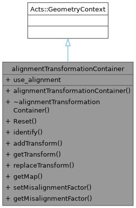
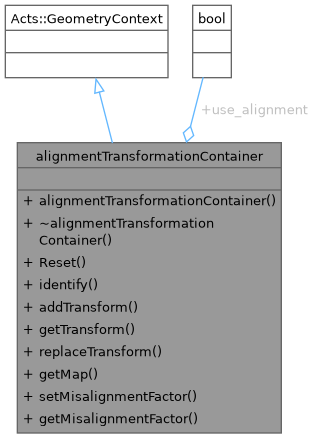
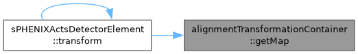
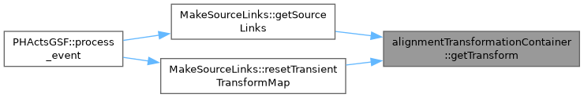

Container class for Alignment transformations. More...
#include <alignmentTransformationContainer.h>


Public Member Functions | |
| alignmentTransformationContainer () | |
| Constructor initializes misalignment factor map for each layer to unity. | |
| virtual | ~alignmentTransformationContainer () |
| void | Reset () |
| Reset the internal transformation container by clearing all stored transforms. | |
| void | identify (std::ostream &os=std::cout) |
| Identify prints alignment transformation container contents to the provided output stream. | |
| void | addTransform (Acts::GeometryIdentifier, const Acts::Transform3 &) |
| Add geometry transform for given identifier to internal container. | |
| Acts::Transform3 & | getTransform (Acts::GeometryIdentifier id) |
| Retrieve the alignment transformation for a given Acts geometry identifier. | |
| void | replaceTransform (const Acts::GeometryIdentifier id, Acts::Transform3 transform) |
| Replace the stored transform for a given Acts geometry identifier. | |
| const std::vector< std::vector< Acts::Transform3 > > & | getMap () const |
| Retrieve the internal alignment transformation map. | |
| void | setMisalignmentFactor (uint8_t layer, double factor) |
| Set misalignment factor for a given detector layer. | |
| const double & | getMisalignmentFactor (uint8_t layer) const |
Static Public Attributes | |
| static bool | use_alignment = false |
Detailed Description
Container class for Alignment transformations.
Association object holding transformations associated with given tracker hitset
Constructor & Destructor Documentation
◆ alignmentTransformationContainer()
| alignmentTransformationContainer::alignmentTransformationContainer | ( | ) |
Constructor initializes misalignment factor map for each layer to unity.
[This comment was generated by CelloAI with openai/gpt-oss-120b at temperature 0.1.]
◆ ~alignmentTransformationContainer()
|
inlinevirtual |
Member Function Documentation
◆ addTransform()
| void alignmentTransformationContainer::addTransform | ( | Acts::GeometryIdentifier | id, |
| const Acts::Transform3 & | transform ) |
Add geometry transform for given identifier to internal container.
- Parameters
-
id Acts geometry identifier for which transform is stored transform 3D transform to be stored
[This comment was generated by CelloAI with openai/gpt-oss-120b at temperature 0.1.]
◆ getMap()
| const std::vector< std::vector< Acts::Transform3 > > & alignmentTransformationContainer::getMap | ( | ) | const |
Retrieve the internal alignment transformation map.
- Returns
- Const reference to a two dimensional vector of Acts Transform3 objects
[This comment was generated by CelloAI with openai/gpt-oss-120b at temperature 0.1.]

◆ getMisalignmentFactor()
|
inline |
◆ getTransform()
| Acts::Transform3 & alignmentTransformationContainer::getTransform | ( | Acts::GeometryIdentifier | id | ) |
Retrieve the alignment transformation for a given Acts geometry identifier.
- Parameters
-
id Acts geometry identifier specifying the layer and sensor.
- Returns
- Reference to the Acts::Transform3 object associated with the identifier.
[This comment was generated by CelloAI with openai/gpt-oss-120b at temperature 0.1.]

◆ identify()
| void alignmentTransformationContainer::identify | ( | std::ostream & | os = std::cout | ) |
Identify prints alignment transformation container contents to the provided output stream.
- Parameters
-
os output stream to receive the identification information
- Returns
- none
[This comment was generated by CelloAI with openai/gpt-oss-120b at temperature 0.1.]
◆ replaceTransform()
| void alignmentTransformationContainer::replaceTransform | ( | const Acts::GeometryIdentifier | id, |
| Acts::Transform3 | transform ) |
Replace the stored transform for a given Acts geometry identifier.
- Parameters
-
id Acts geometry identifier used to locate the layer and sensor entry. transform New Acts::Transform3 object to store in the container.
[This comment was generated by CelloAI with openai/gpt-oss-120b at temperature 0.1.]
◆ Reset()
| void alignmentTransformationContainer::Reset | ( | ) |
Reset the internal transformation container by clearing all stored transforms.
[This comment was generated by CelloAI with openai/gpt-oss-120b at temperature 0.1.]
◆ setMisalignmentFactor()
| void alignmentTransformationContainer::setMisalignmentFactor | ( | uint8_t | layer, |
| double | factor ) |
Set misalignment factor for a given detector layer.
- Parameters
-
layer identifier of the detector layer uint8_t factor misalignment scaling factor double
- Returns
- void
[This comment was generated by CelloAI with openai/gpt-oss-120b at temperature 0.1.]
Member Data Documentation
◆ use_alignment
|
static |
The documentation for this class was generated from the following files:
- /home/atif/sphenix-celloai/coresoftware/offline/packages/trackbase/alignmentTransformationContainer.h
- /home/atif/sphenix-celloai/coresoftware/offline/packages/trackbase/alignmentTransformationContainer.cc
Generated by